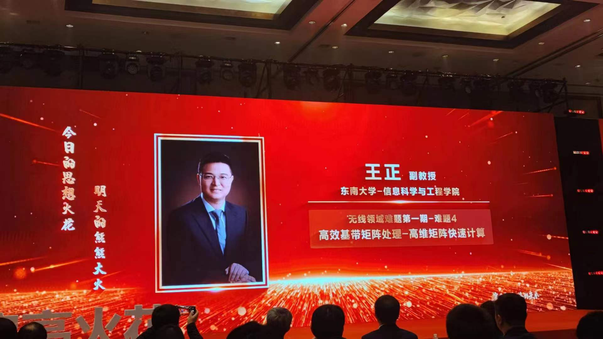
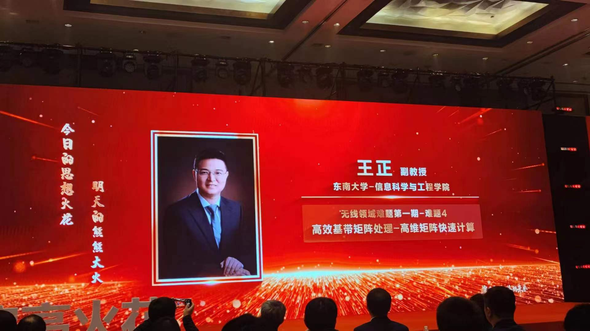
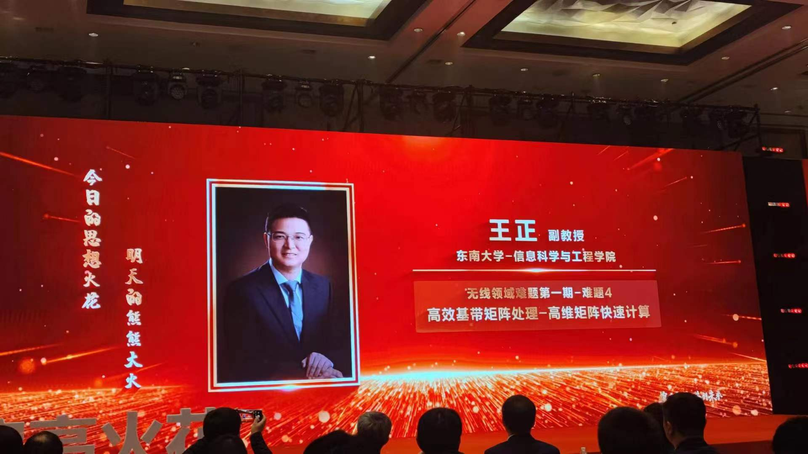
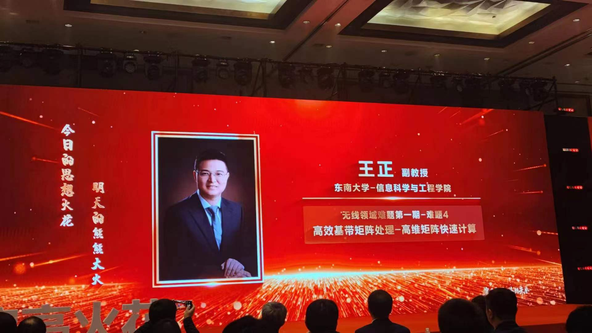

 |
Zheng Wang (王 正) |
 Education&Professional Experience
Education&Professional Experience2010.12 - 2015.05::
2009.09 - 2010.09::
2005.09 - 2009.06::
2021.05 - present::
2017.09 - 2021.05::
2016.06 - 2017.08::
2015.05 - 2016.06::
2011.05 - 2015.03::
 Latest News
Latest News Click the fold button to view the images(点击查看图片)

Click the fold button to view the images(点击查看图片)

 Representative Publications
Representative PublicationsJournal Articles:
[1] Z. Wang* and C. Ling, “Lattice Gaussian sampling by Markov chain Monte Carlo: Bounded distance decoding and trapdoor sampling, ” IEEE Transactions on Information Theory (TIT, 通信与信号处理领域至尊期刊), vol. 65, no.6, pp. 3630-3645, June, 2019. [Link] [PDF]
[2] Z. Wang* and C. Ling, “On the geometric ergodicity of Metropolis-Hastings algorithms for lattice Gaussian sampling,” IEEE Transactions on Information Theory (TIT, 通信与信号处理领域至尊期刊), vol. 64, no. 2, pp. 738-751, Feb, 2018. [Link] [PDF]
[3] Z. Wang*, Y. Huang and S. Lyu, “Lattice-Reduction-Aided Gibbs Algorithm for Lattice Gaussian Sampling: Convergence Enhancement and Decoding Optimization,” IEEE Transactions on Signal Processing (TSP, 通信与信号处理领域权威期刊), vol. 67, no. 16, pp. 4342-4356, Aug, 2019. [Link] [PDF]
[4] Z. Wang*, R. M. Gower, C. Zhang, S. Lyu, Y. Xia and Y. Huang, “A Statistical Linear Precoding Scheme Based On Random Iterative Method For Massive MIMO Systems,” IEEE Transactions on Wireless Communications (TWC, 通信与信号处理领域权威期刊), vol. 21, no. 12, pp. 10115-10129, Dec. 2022. [Link] [PDF]
[5] Z. Wang*, S. Lyu, L. Liu and Y. Xia, “Learning-Aided Markov Chain Monte Carlo Scheme for Spectrum Sensing in Cognitive Radio,” IEEE Transactions on Vehicular Technology (TVT, 通信与信号处理领域中坚期刊), vol. 71, no.10, pp. 11301-11305, Oct. 2022. [Link] [PDF]
[6] Z. Wang*, R. M. Gower, Y. Xia, L. He and Y. Huang, “Randomized Iterative Methods for Low-Complexity Large-Scale MIMO Detection,” IEEE Transactions on Signal Processing (TSP, 通信与信号处理领域权威期刊), vol. 70, pp. 2934-2949, 2022. [Link] [PDF]
[7] Z. Wang*, “Markov chain Monte Carlo Methods for Lattice Gaussian Sampling: Convergence Analysis and Enhancement,” IEEE Transactions on Communications (TCOM, 通信与信号处理领域权威期刊), vol. 67, no. 16, pp. 67116724, Oct, 2019. [Link] [PDF]
[8] Z. Wang*, L. Liu and C. Ling, “Sliced Lattice Gaussian Sampling: Convergence Enhancement and Decoding Optimization,” IEEE Transactions on Communications (TCOM, 通信与信号处理领域权威期刊), vol. 69, no. 4, pp. 2599-2612, April 2021. [Link] [PDF]
[9] Z. Wang*, S. Lyu, Y. Xia and Q. Wu, “Expectation Propagation-based Sampling Decoding: Enhancement and Optimization,” IEEE Transactions on Signal Processing (TSP, 通信与信号处理领域权威期刊), vol. 69, pp. 195-209,2021. [Link] [PDF]
[10] Z. Wang*, Y. Xia, J. Li and Q. Wu, “A New Method of Integer Parameter Estimation in Linear Models with Applications to GNSS High Precision Positioning,” IEEE Transactions on Signal Processing (TSP, 通信与信号处理领域权威期刊), vol. 69, pp. 4567-4579, 2021. [Link] [PDF]
[11] Z. Wang*, S. Liu and C. Ling, “Decoding by sampling part II: Derandomization and soft-output decoding,” IEEE Transactions on Communications (TCOM, 通信与信号处理领域权威期刊), vol. 61, no. 11, pp. 4630-4639, Nov, 2013. [Link] [PDF]
Conference Articles:
[1] Z. Wang* and C. Ling, “On the geometric ergodicity of Gibbs algorithm for lattice Gaussian sampling,” IEEE Information Theory Workshop (ITW, 信息论旗舰会议), pp. 269-273, Kaohsiung, Taiwan, Nev. 2017. [Link] [PDF]
[2] Z. Wang* and C. Ling, “On the geometric ergodicity of Gibbs algorithm for lattice Gaussian sampling,” IEEE Information Theory Workshop (ITW, 信息论旗舰会议), pp. 269-273, Kaohsiung, Taiwan, Nev. 2017. [Link] [PDF]
[3] Z. Wang* and C. Ling, “Symmetric Metropolis-within-Gibbs algorithm for lattice Gaussian sampling,” IEEE Information Theory Workshop (ITW, 信息论旗舰会议), pp.394-398, Cambridge, UK, Sept, 2016. [Link] [PDF]
[4] Z. Wang* and C. Ling, “Further results on independent Metropolis-Hastings-Klein sampling,” Proc. IEEE International Symposium on Information Theory (ISIT, 信息论旗舰会议), pp. 1924-1928, Barcelona, Spain, Jun. 2016. [Link] [PDF]
[5] Z. Wang* and C. Ling, “Independent Metropolis-Hastings-Klein algorithm for lattice Gaussian sampling,” Proc. IEEE International Symposium on Information Theory (ISIT, 信息论旗舰会议), pp.2470-2474, Hong Kong, China, Jun. 2015. [Link] [PDF]
[6] Z. Wang* G. Hanrot and C. Ling, “Markov chain Monte Carlo algorithms for lattice Gaussian sampling,” Proc. IEEE International Symposium on Information Theory (ISIT, 信息论旗舰会议), pp. 1489-1493, Honolulu, USA, Jun. 2014. [Link] [PDF]
[7] Z. Wang* and C. Ling, “Derandomized sampling algorithm for lattice decoding,” IEEE Information Theory Workshop (ITW, 信息论旗舰会议), pp. 222-226, Lausanne, Swiss, Sep. 2012. [Link] [PDF]
[8] Z. Wang* and C. Ling, “Slice Sampling for lattice Gaussian distribution,” Proc. IEEE International Symposium on Information Theory (ISIT, 信息论旗舰会议), Paris, France, July, 2019. [Link] [PDF]
[9] Z. Wang*, Y. Xia, S. Lyu and C. Ling, “Reinforcement Learning-Aided Markov Chain Monte Carlo For Lattice Gaussian Sampling,” IEEE Information Theory Workshop (ITW, 信息论旗舰会议), pp.1-5, Oct., 2021. [Link] [PDF]
 Hosting Scientific Research Projects
Hosting Scientific Research Projects Courses Taught
Courses TaughtUndergraduate Courses::
Postgraduate Courses::
Professional Affiliations:
TPC Member & Session Chair:
Reviewer:
 Granted Patents
Granted Patents Statistics
Statistics Cooperation
Cooperation